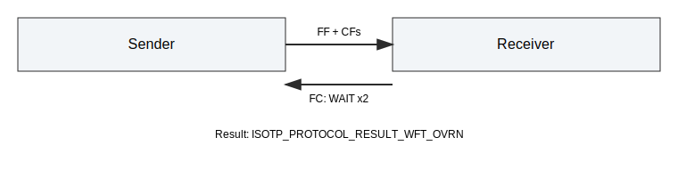

AUTOSAR CanTp Integration Tests¶
This document describes the AUTOSAR CanTp-oriented integration tests added for the Python API. The suite focuses on FlowControl WAIT handling and selected CanTp timing and protocol behaviors. All tests are deterministic and use mock time.
Scope¶
The tests in tests/integration/test_cantp.py cover:
- FlowControl WAIT handling: single WAIT then CONTINUE, and WFT overrun.
- N_Bs and N_Cr timeouts using configurable timeouts.
- STmin and Block Size (BS) flow control parameters.
- Unexpected PDU handling (CF without FF).
Helper Utilities¶
The test file defines helpers for clarity and reuse:
- _poll_until_receive: polls until a payload is received or steps are exhausted.
- _make_payload: creates deterministic payloads.
- _fc_frame: builds raw FlowControl frames (FS/BS/STmin).
Test Cases¶
test_wait_frame_then_continue¶
- Setup: multi-frame payload and injected FC frames.
- Action: inject FC Wait followed by FC Continue.
- Expectation: payload is transmitted and received successfully.

test_wait_frame_overrun¶
- Setup: multi-frame payload and injected FC Wait frames.
- Action: inject FC Wait twice (exceeding ISO_TP_MAX_WFT_NUMBER).
- Expectation: sender protocol result is ISOTP_PROTOCOL_RESULT_WFT_OVRN.

test_cantp_timeout_n_bs¶
- Setup: N_Bs=30 ms, N_Cr=10 ms, FlowControl disabled.
- Action: send a multi-frame payload, advance mock time.
- Expectation: sender protocol result is ISOTP_PROTOCOL_RESULT_TIMEOUT_BS.

test_cantp_timeout_n_cr¶
- Setup: N_Bs=30 ms, N_Cr=10 ms, CAN drop enabled after FF.
- Action: send a multi-frame payload, advance mock time.
- Expectation: receiver protocol result is ISOTP_PROTOCOL_RESULT_TIMEOUT_CR.

test_cantp_stmin_and_bs¶
- Setup: BS=1, STmin=5 ms.
- Action: send a multi-frame payload, poll with mock time.
- Expectation: payload is received intact.

test_cantp_unexpected_pdu¶
- Setup: default link.
- Action: inject a CF without a prior FF.
- Expectation: receiver protocol result is ISOTP_PROTOCOL_RESULT_UNEXP_PDU.

Notes¶
- Raw CAN injection uses pyisotp.inject_can.
- Timing uses mock time via pyisotp.time_advance.
- Update this document if core behavior or timeout defaults change.